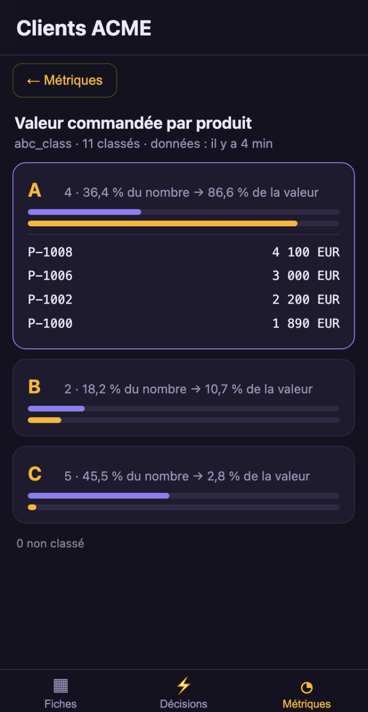

kind: Metric — position among peers
acrossplaces each group of a metric among the others: its share of the total, its rank, its ABC class. The class sizes sit on every row, so the chat reads them instead of counting.
Before and after
Each of the desk's orders carries a product code and an amount. A client's first ABC question is about the whole population: how many products in A, B and C, and what share of the value each class carries. Ask the chat. It cannot say:
$ lm ask "Combien de produits sont en A, B et C, et quelle part de la valeur porte chaque classe ?" --scope desk
Je ne peux pas répondre à partir des données disponibles pour ce périmètre — la question ne correspond pas au schéma déclaré.
The metric in The manifest places each product among the others. Ask the same
question again. Look at the metric: lines under the answer:
$ lm ask "Combien de produits sont en A, B et C, et quelle part de la valeur porte chaque classe ?" --scope desk
Il y a 4 produits dans la classe A, représentant 36,36% des produits en tout. La classe A porte 86,55% de la valeur totale.
Il y a 2 produits dans la classe B, représentant 18,18% des produits en tout. La classe B porte 10,68% de la valeur totale.
Il y a 5 produits dans la classe C, représentant 45,45% des produits en tout. La classe C porte 2,77% de la valeur totale.
data as of: 2026-11-26T19:10:36.612389Z (last completed run)
metric: Valeur commandée par produit — pareto(order_value, bounds [80, 95], labels [A, B, C]) over every group, prior mass, null and ≤ 0 unclassified: this group's class; null when unclassified
metric: Valeur commandée par produit — pareto(order_value, bounds [80, 95], labels [A, B, C]) over every group, prior mass, null and ≤ 0 unclassified: groups in this class
metric: Valeur commandée par produit — pareto(order_value, bounds [80, 95], labels [A, B, C]) over every group, prior mass, null and ≤ 0 unclassified: share of the classified groups in this class (%)
metric: Valeur commandée par produit — pareto(order_value, bounds [80, 95], labels [A, B, C]) over every group, prior mass, null and ≤ 0 unclassified: share of order_value this class carries (%)
ABC_CLASS ABC_CLASS_COUNT ABC_CLASS_COUNT_SHARE ABC_CLASS_SHARE
A 4 36.3636363636363636 86.5547050487924110
B 2 18.1818181818181818 10.6780969412696546
C 5 45.4545454545454545 2.7671980099379343
3 rows returned
SQL: SELECT DISTINCT "abc_class", "abc_class_count", "abc_class_count_share", "abc_class_share"
FROM (SELECT "code", "order_value", "weight", "weight_total", "position", "position_population", "abc_class", "abc_class_before", "abc_class_count", "abc_class_count_share", "abc_class_share", "abc_class_population", "abc_class_unclassified" FROM connector."metric_products_abc") AS "metric_products_abc"
LIMIT 500
- Read the
SQLline: the chat read the class columns. It did not count rows. - Each
metric:line names one column the answer reads, and what that column holds.
The captures on this page come from an integrator with no scope:* role. lm ask needs
lm_integrator.
The manifest
# 40-products-abc.yaml — which products carry the desk's ordered value.
#
# Over the typed orders (entities/56-order.yaml), one row per product code. `across` places each product among the
# others: its share of the value, its rank, and its ABC class. A product is A while the products before it carry
# under 80 % of the value, B under 95 %, C beyond.
apiVersion: apps.lumnik.io/v1
kind: Metric
metadata:
name: products_abc
spec:
scope: desk
title: Valeur commandée par produit
description: La part de chaque produit dans la valeur commandée, et sa classe ABC.
source:
entity: DeskOrder
by: [code]
measures:
order_value: { sum: amount, unit: EUR }
across:
weight: { share: order_value }
position: { rank: order_value }
abc_class: { preset: abc, of: order_value }
by: [code]gives one row per product. A product is a group. A metric with nobyand no time grain has no groups, andacrossis refused there.order_valueis the measure the three entries read. An entry reads a number measure of the metric, by its name.weight: { share: order_value }is each product's share of the total value.position: { rank: order_value }is each product's rank. 1 is the largest value.abc_class: { preset: abc, of: order_value }is each product's ABC class.preset: abcstands forpareto: order_value, bounds: [80, 95], labels: [A, B, C]. Write that form to choose your own bounds and labels.boundsorlabelswritten besidepreset: abcreplace its defaults.weight,positionandabc_classare names you choose. Each one names the columns its entry adds.
Set it up yourself
Land the typed orders and apply the entity, as in kind: Metric — count. Start from the demo file's twelve orders, as this page does. If you ran A run that changes a row, your file also holds SO-000013, and every number here would differ. Remove that line:
docker compose -f docker-compose.selfhost.yml exec hub sh -c \
"sed -i '/^SO-000013,/d' /tmp/drop/1/acme-desk/acme-orders.csv"
Then run the connector, and read its run when it says Completed. The file is the table's whole
state, so the run removes the order the file no longer holds:
$ lm connector run acme-desk-orders-typed
run scheduled: c7b4796d-c76f-41a3-b69d-9a0bb8ae299e
$ lm run get c7b4796d
ID CONNECTOR ENDPOINT STATUS IN OUT SKIPPED DEAD-LETTERS STARTED ENDED
c7b4796d acme-desk-orders-typed default Completed 12 12 0 0 2026-11-26 20:10 2026-11-26 20:10
• 1 row(s) removed — the source no longer holds them
Then apply the metric:
$ lm metric apply -f docs/apps/demo/metrics/40-products-abc.yaml
Applied metric "products_abc" (definition version 1)
$ lm metric list
NAME TITLE ENTITY SCOPE STATUS MATERIALIZED REASON
products_abc Valeur commandée par produit DeskOrder desk valid
What each entry adds
Each entry adds its own column and its companions, named after it. Every row of the metric carries them. With the demo's names:
| Column | Unit | Holds |
|---|---|---|
weight |
% | the product's share of the total value |
weight_total |
EUR | the total the share is taken of |
position |
the product's rank: 1 is the largest value, products with the same value share a rank | |
position_population |
the products ranked: the 11 of "3 of 11" | |
abc_class |
the product's class, A, B or C; empty when the product is not classified |
|
abc_class_before |
% | the share of the value held by the products before this one: it sets the class |
abc_class_count |
the products in this class | |
abc_class_count_share |
% | the share of the classified products that are in this class |
abc_class_share |
% | the share of the value this class carries |
abc_class_population |
the products classified | |
abc_class_unclassified |
the products left unclassified |
- A share is in percentage points.
86.55is 86.55 %. weight_totalhas the measure's unit, EUR here.abc_class_count_shareandabc_class_sharemake one sentence from one row: 36 % of the classified products carry 87 % of the value.- The class column holds only its labels. The chat filters
abc_class = 'A'. A query that filters it on another value, such as'a', is refused before it runs, and the refusal names A, B and C.
How a class is decided
A product's class is read from the value of the products before it, never from its own value:
- The products are sorted by value, the largest first.
- The value of the products before a product, as a share of the total, is its
abc_class_before. - Under 80 %, the product is A. Under 95 %, it is B. From 95 %, it is C.
The demo's products, in that order:
| Product | Value (EUR) | Before (%) | Class |
|---|---|---|---|
| P-1008 | 4100 | 0 | A |
| P-1006 | 3000 | 31.71 | A |
| P-1002 | 2200 | 54.92 | A |
| P-1000 | 1890 | 71.94 | A |
| P-1009 | 999.99 | 86.55 | B |
| P-1001 | 380.5 | 94.29 | B |
| P-1010 | 120 | 97.23 | C |
| P-1003 | 90 | 98.16 | C |
| P-1004 | 77 | 98.86 | C |
| P-1011 | 55 | 99.45 | C |
| P-1005 | 15.75 | 99.88 | C |
- P-1000 starts at 71.94 %, so it is A. With it, class A carries 86.55 % of the value. The product that crosses 80 % stays A.
- P-1009 starts at 86.55 %, so it is B.
- Products with the same value travel together. They share one
abc_class_before: the value before all of them. So they land in one class, even when together they cross a bound.
Quarters by number: quantile
pareto cuts by value: which products carry the first 80 % of the value. quantile cuts by
number: which products are in the first 25 % of the products. Same bounds, same labels, same
columns, but a product's class is read from how many products lie before it, not from their
value:
# 50-products-quartile.yaml — which products are in the top quarter by ordered value.
#
# Over the typed orders (entities/56-order.yaml), one row per product code. `quantile` cuts by number, not by value:
# a product takes the first label while fewer than 25 % of the products lie before it, the second under 50 %, the
# third under 75 %, the last beyond. Labels go from head to tail, so the usual quartile names are written
# [Q4, Q3, Q2, Q1]: Q4 holds the largest values, Q1 the smallest. Each row also says what share of the ordered value
# its quarter carries.
apiVersion: apps.lumnik.io/v1
kind: Metric
metadata:
name: products_quartile
spec:
scope: desk
title: Quartiles des produits par valeur commandée
description: Le quart de chaque produit par valeur commandée, et la part de la valeur que porte son quart.
source:
entity: DeskOrder
by: [code]
measures:
order_value: { sum: amount, unit: EUR }
across:
value_quarter: { quantile: order_value, bounds: [25, 50, 75], labels: [Q4, Q3, Q2, Q1] }
- The products are sorted by value, the largest first.
- The products before a product, as a share of all the products, is its
value_quarter_before. - Under 25 %, the product takes the first label. Under 50 %, the second. Under 75 %, the third. From 75 %, the last.
Labels go from head to tail. The first label holds the largest values, whatever its name. For
the usual quartile names, write [Q4, Q3, Q2, Q1]: Q4 holds the largest values and Q1 the
smallest, as "upper quartile" means. Nothing in a name is special: the order you write decides.
The demo's 11 products:
| Product | Value (EUR) | Before (%) | Quartile |
|---|---|---|---|
| P-1008 | 4100 | 0 | Q4 |
| P-1006 | 3000 | 9.09 | Q4 |
| P-1002 | 2200 | 18.18 | Q4 |
| P-1000 | 1890 | 27.27 | Q3 |
| P-1009 | 999.99 | 36.36 | Q3 |
| P-1001 | 380.5 | 45.45 | Q3 |
| P-1010 | 120 | 54.55 | Q2 |
| P-1003 | 90 | 63.64 | Q2 |
| P-1004 | 77 | 72.73 | Q2 |
| P-1011 | 55 | 81.82 | Q1 |
| P-1005 | 15.75 | 90.91 | Q1 |
- Q4, the upper quartile, holds 3 products, and
value_quarter_sharesays they carry 71.94 % of the value. Class A ofproducts_abcholds 4: one cut counts the products, the other their value. - Products with the same value travel together, as for
pareto: they share onevalue_quarter_before, the number of products before all of them. _beforeis a share of the products here. Every other column means what it means forpareto.
Null, zero and negative values
Each entry has its own rule:
| Entry | Empty value | Zero | Negative |
|---|---|---|---|
share |
no share | share 0 | a negative share, and the value stays in the total |
rank |
no rank, not counted in _population |
ranked | ranked |
pareto, preset: abc |
unclassified | unclassified | unclassified |
quantile |
unclassified | classified | classified |
- When the total is 0 or less, every share is empty: a
share, and aquantileclass's_share. - A
share, or aquantileclass's_share, can be negative or above 100 when the population mixes positive and negative values and its total stays positive. A total of 40 EUR made of 50 and −10: the 50 EUR product carries 125 % of it. - A return makes a negative value. Under
pareto, that product is left unclassified, so it does not move the other products' classes. Underquantile, it is counted and takes the tail label: one product more in the population moves every other product's_before. abc_class_populationcounts the classified products only.abc_class_unclassifiedcounts the others. Every row says both.
Add three orders to the file in your tenant's folder (demo desk): a return, an order at 0 and an order with no amount:
docker compose -f docker-compose.selfhost.yml exec hub sh -c '
cd /tmp/drop/1/acme-desk
echo "SO-000014,P-1013,AVOIR,-50.00,2026-08-14" >> acme-orders.csv
echo "SO-000015,P-1014,BROUILLON,0.00,2026-08-14" >> acme-orders.csv
echo "SO-000016,P-1015,BROUILLON,,2026-08-14" >> acme-orders.csv'
Run the connector, and wait until the run says Completed:
$ lm connector run acme-desk-orders-typed
run scheduled: 0c4df3d2-88db-4010-a1ae-e2acab62bd6c
$ lm run list
ID CONNECTOR ENDPOINT STATUS IN OUT SKIPPED DEAD-LETTERS STARTED ENDED
0c4df3d2 acme-desk-orders-typed default Completed 15 15 0 0 2026-11-26 20:10 2026-11-26 20:10
c7b4796d acme-desk-orders-typed default Completed 12 12 0 0 2026-11-26 20:10 2026-11-26 20:10
79c1ab34 acme-desk-orders-typed default Completed 13 13 0 0 2026-11-26 20:10 2026-11-26 20:10
1330e0b8 acme-desk-orders-typed default Completed 12 12 0 0 2026-11-26 20:10 2026-11-26 20:10
Read the three new products, and P-1008 beside them:
$ lm metric get products_abc -o json | jq -c '.rows[] | select(.abc_class == null or .code == "P-1008") | {code, order_value, weight, position, abc_class, abc_class_population, abc_class_unclassified}'
{"code":"P-1008","order_value":4100,"weight":31.8366484861285393,"position":1,"abc_class":"A","abc_class_population":11,"abc_class_unclassified":3}
{"code":"P-1013","order_value":-50,"weight":-0.38825181080644560126,"position":13,"abc_class":null,"abc_class_population":11,"abc_class_unclassified":3}
{"code":"P-1014","order_value":0,"weight":0,"position":12,"abc_class":null,"abc_class_population":11,"abc_class_unclassified":3}
{"code":"P-1015","order_value":null,"weight":null,"position":null,"abc_class":null,"abc_class_population":11,"abc_class_unclassified":3}
- P-1013, the return, has a negative share and ranks 13th. It has no class.
- P-1014 has a share of 0 and ranks 12th. It has no class.
- P-1015 has no value: no share, no rank. 13 products are ranked, not 14.
- P-1008's row says it too: 11 products classified, 3 unclassified.
- No class moved. A class reads the positive values only.
weightreads them all: its total,weight_total, is now 12878.24 EUR, the return included (Without the chat).
within
Without within, all the groups of the metric are one population. With within, each value of
the keys it names is a population of its own:
withinnamesbycolumns of the metric, or its time grain.- It never names all the keys. Each group would be alone, and A. The apply refuses it (Refusals).
- When the metric has a time grain and a
bycolumn,withinmust name the grain. One ABC over the products of several weeks is rarely what is meant, and nothing in the rows would show it. - A metric whose only key is its grain has no
within. Its population is the periods.
An ABC per week, products-abc-weekly.yaml:
apiVersion: apps.lumnik.io/v1
kind: Metric
metadata:
name: products_abc_weekly
spec:
scope: desk
title: Valeur commandée par produit et par semaine
source:
entity: DeskOrder
by: [code, { week: ordered_on }]
measures:
order_value: { sum: amount, unit: EUR }
across:
within: [week]
abc_class: { preset: abc, of: order_value }
Without the line within: [week], the apply is refused:
$ lm metric apply -f products-abc-weekly.yaml
Error: API error 400: spec.across.within must name week: with a grain and a by column, a population is one period
With it, each week is a population:
$ lm metric apply -f products-abc-weekly.yaml
Applied metric "products_abc_weekly" (definition version 1)
$ lm metric get products_abc_weekly
Valeur commandée par produit et par semaine
CODE WEEK ORDER_VALUE ABC_CLASS ABC_CLASS_BEFORE ABC_CLASS_COUNT ABC_CLASS_COUNT_SHARE ABC_CLASS_SHARE ABC_CLASS_POPULATION ABC_CLASS_UNCLASSIFIED _DISPUTED
P-1000 2026-07-27 1250 A 0 1 100.0000000000000000 100.0000000000000000 1 0 0
P-1000 2026-08-03 640 B 84.8342029961285979 2 33.3333333333333333 13.7417943107221007 6 0 0
P-1001 2026-08-03 380.5 B 93.4522807608146777 2 33.3333333333333333 13.7417943107221007 6 0 0
P-1002 2026-08-03 2200 A 55.2095606800201986 2 33.3333333333333333 84.8342029961285979 6 0 0
P-1003 2026-08-03 90 C 98.5759973068506985 2 33.3333333333333333 1.4240026931493015 6 0 0
P-1004 2026-08-10 77 C 96.8955712501675686 2 40.0000000000000000 3.1044287498324314 5 3 0
P-1005 2026-08-03 15.75 C 99.7879144925096785 2 33.3333333333333333 1.4240026931493015 6 0 0
P-1006 2026-08-10 3000 A 0 2 40.0000000000000000 94.0733632957744491 5 3 0
P-1008 2026-08-03 4100 A 0 2 33.3333333333333333 84.8342029961285979 6 0 0
P-1009 2026-08-10 999.99 A 70.5551988598279864 2 40.0000000000000000 94.0733632957744491 5 3 0
P-1010 2026-08-10 120 B 94.0733632957744491 1 20.0000000000000000 2.8222079543931195 5 3 0
P-1011 2026-08-10 55 C 98.7064880209031536 2 40.0000000000000000 3.1044287498324314 5 3 0
P-1013 2026-08-10 -50 5 3 0
P-1014 2026-08-10 0 5 3 0
P-1015 2026-08-10 5 3 0
order_value: EUR
abc_class_before: %
abc_class_count_share: %
abc_class_share: %
order_value = sum(amount), by code, by week of ordered_on, UTC
abc_class = pareto(order_value, bounds [80, 95], labels [A, B, C]) within week, prior mass, null and ≤ 0 unclassified
data as of: 2026-11-26T19:10:45.379884Z (last completed run)
- P-1000 is A in the week of 27 July: it is the only product that week. It is B in the week of 3 August.
- Each week counts its own products: 1, 6 and 5 classified. The week of 10 August also holds the three new products, unclassified.
- The definition line says
within week.
Delete it before you go on. The next sections read the desk without it:
$ lm metric delete products_abc_weekly
metric products_abc_weekly deleted
_disputed on an across metric
_DISPUTED counts the records whose sources disagree on a column the metric reads
(kind: Metric — count). With across, a row's share, rank
and class depend on every group of its population. So a row's _DISPUTED counts the disputed
records of its whole population, and one disputed group marks every row of it. With within, it
marks the rows of its own population only.
Land the two copies of the due orders and apply OrderDue, as in
The line says (disputed). Its metric due_orders is not
needed here. The two copies disagree on SO-2's due date. A metric per order, due-by-order.yaml,
reads that date in last_due:
apiVersion: apps.lumnik.io/v1
kind: Metric
metadata:
name: due_by_order
spec:
scope: desk
title: Échéance par commande
source:
entity: OrderDue
by: [order_no]
measures:
due_amount: { sum: amount, unit: EUR }
last_due: { max: due }
Only SO-2 is disputed:
$ lm metric apply -f due-by-order.yaml
Applied metric "due_by_order" (definition version 1)
$ lm metric get due_by_order
Échéance par commande
ORDER_NO DUE_AMOUNT LAST_DUE _DISPUTED
SO-1 1500 2026-07-01T14:30:00.000+00:00 0
SO-2 980.5 2026-07-03T09:00:00.000+00:00 1
due_amount: EUR
due_amount = sum(amount), by order_no
last_due = max(due), by order_no
data as of: 2026-11-26T19:10:46.766563Z (last completed run)
Add each order's share of the amount at the end of the file:
across:
weight: { share: due_amount }
SO-2 is disputed on its due date, not on its amount. But any disputed record of a population marks every row of it. Both rows are disputed:
$ lm metric apply -f due-by-order.yaml
Applied metric "due_by_order" (definition version 2)
$ lm metric get due_by_order
Échéance par commande
ORDER_NO DUE_AMOUNT LAST_DUE WEIGHT WEIGHT_TOTAL _DISPUTED
SO-1 1500 2026-07-01T14:30:00.000+00:00 60.4716790969562588 2480.5 1
SO-2 980.5 2026-07-03T09:00:00.000+00:00 39.5283209030437412 2480.5 1
due_amount: EUR
weight: %
weight_total: EUR
due_amount = sum(amount), by order_no
last_due = max(due), by order_no
weight = share(due_amount) over every group
data as of: 2026-11-26T19:10:46.766563Z (last completed run)
Delete it before you go on:
$ lm metric delete due_by_order
metric due_by_order deleted
Reading the distribution
Without the chat
lm metric get prints every column, then the units, then one line per measure and per entry:
$ lm metric get products_abc
Valeur commandée par produit
CODE ORDER_VALUE WEIGHT WEIGHT_TOTAL POSITION POSITION_POPULATION ABC_CLASS ABC_CLASS_BEFORE ABC_CLASS_COUNT ABC_CLASS_COUNT_SHARE ABC_CLASS_SHARE ABC_CLASS_POPULATION ABC_CLASS_UNCLASSIFIED _DISPUTED
P-1000 1890 14.6759184484836437 12878.24 4 13 A 71.9355457510070976 4 36.3636363636363636 86.5547050487924110 11 3 0
P-1001 380.5 2.9545962802370510 12878.24 6 13 B 94.2896326182063452 2 18.1818181818181818 10.6780969412696546 11 3 0
P-1002 2200 17.0830796754836065 12878.24 3 13 A 54.9185349281882143 4 36.3636363636363636 86.5547050487924110 11 3 0
P-1003 90 0.69885325945160208227 12878.24 8 13 C 98.1610025803976411 5 45.4545454545454545 2.7671980099379343 11 3 0
P-1004 77 0.59790778864192622594 12878.24 9 13 C 98.8571530231493227 5 45.4545454545454545 2.7671980099379343 11 3 0
P-1005 15.75 0.12229932040403036440 12878.24 11 13 C 99.8781736725184557 5 45.4545454545454545 2.7671980099379343 11 3 0
P-1006 3000 23.2951086483867361 12878.24 2 13 A 31.7135201697988280 4 36.3636363636363636 86.5547050487924110 11 3 0
P-1008 4100 31.8366484861285393 12878.24 1 13 A 0 4 36.3636363636363636 86.5547050487924110 11 3 0
P-1009 999.99 7.7649585657667507 12878.24 5 13 B 86.5547050487924110 2 18.1818181818181818 10.6780969412696546 11 3 0
P-1010 120 0.93180434593546944303 12878.24 7 13 C 97.2328019900620657 5 45.4545454545454545 2.7671980099379343 11 3 0
P-1011 55 0.42707699188709016139 12878.24 10 13 C 99.4527484019479836 5 45.4545454545454545 2.7671980099379343 11 3 0
P-1013 -50 -0.38825181080644560126 12878.24 13 13 11 3 0
P-1014 0 0 12878.24 12 13 11 3 0
P-1015 12878.24 13 11 3 0
order_value: EUR
weight: %
weight_total: EUR
abc_class_before: %
abc_class_count_share: %
abc_class_share: %
order_value = sum(amount), by code
weight = share(order_value) over every group
position = rank(order_value) over every group, 1 = largest
abc_class = pareto(order_value, bounds [80, 95], labels [A, B, C]) over every group, prior mass, null and ≤ 0 unclassified
data as of: 2026-11-26T19:10:45.379884Z (last completed run)
abc_classreads as theparetothatpreset: abcstands for, with its bounds and labels.over every groupis one population. Withwithin, the line sayswithinand the keys.prior massis the rule of How a class is decided.null and ≤ 0 unclassifiedis the rule of Null, zero and negative values.- The shares are in
%.weight_totalis in the measure's unit. Ranks and counts have no unit.
What the chat cites
The class sizes and value shares repeat on every row of a class. The chat reads them with
SELECT DISTINCT, once per class:
$ lm ask "Combien de produits sont en A, B et C, et quelle part de la valeur porte chaque classe ?" --scope desk
Il y a 4 produits dans la classe A, représentant 36,36% des produits en tout. La classe A porte 86,55% de la valeur totale.
Il y a 2 produits dans la classe B, représentant 18,18% des produits en tout. La classe B porte 10,68% de la valeur totale.
Il y a 5 produits dans la classe C, représentant 45,45% des produits en tout. La classe C porte 2,77% de la valeur totale.
data as of: 2026-11-26T19:10:45.379884Z (last completed run)
metric: Valeur commandée par produit — pareto(order_value, bounds [80, 95], labels [A, B, C]) over every group, prior mass, null and ≤ 0 unclassified: this group's class; null when unclassified
metric: Valeur commandée par produit — pareto(order_value, bounds [80, 95], labels [A, B, C]) over every group, prior mass, null and ≤ 0 unclassified: groups in this class
metric: Valeur commandée par produit — pareto(order_value, bounds [80, 95], labels [A, B, C]) over every group, prior mass, null and ≤ 0 unclassified: share of the classified groups in this class (%)
metric: Valeur commandée par produit — pareto(order_value, bounds [80, 95], labels [A, B, C]) over every group, prior mass, null and ≤ 0 unclassified: share of order_value this class carries (%)
ABC_CLASS ABC_CLASS_COUNT ABC_CLASS_COUNT_SHARE ABC_CLASS_SHARE
A 4 36.3636363636363636 86.5547050487924110
B 2 18.1818181818181818 10.6780969412696546
C 5 45.4545454545454545 2.7671980099379343
4 rows returned
SQL: SELECT DISTINCT "abc_class", "abc_class_count", "abc_class_count_share", "abc_class_share"
FROM (SELECT "code", "order_value", "weight", "weight_total", "position", "position_population", "abc_class", "abc_class_before", "abc_class_count", "abc_class_count_share", "abc_class_share", "abc_class_population", "abc_class_unclassified" FROM connector."metric_products_abc") AS "metric_products_abc"
LIMIT 500
The fourth row is empty: it is the three unclassified products. An empty cell claims nothing, so the answer is still cited.
The answer says "des produits en tout". But 36,36 % is a share of the 11 classified products, not of all 14: 4 of 11.
A list of products is cited when each row shows the class beside the product:
$ lm ask "Quels produits sont en A ?" --scope desk
Il y a 4 produits en A. Les codes sont : P-1008, P-1006, P-1002 et P-1000.
data as of: 2026-11-26T19:10:45.379884Z (last completed run)
metric: Valeur commandée par produit — pareto(order_value, bounds [80, 95], labels [A, B, C]) over every group, prior mass, null and ≤ 0 unclassified: this group's class; null when unclassified
CODE ABC_CLASS
P-1008 A
P-1006 A
P-1002 A
P-1000 A
4 rows returned
SQL: SELECT "code", "abc_class" FROM (SELECT "code", "order_value", "weight", "weight_total", "position", "position_population", "abc_class", "abc_class_before", "abc_class_count", "abc_class_count_share", "abc_class_share", "abc_class_population", "abc_class_unclassified" FROM connector."metric_products_abc") AS "metric_products_abc" WHERE "abc_class" = 'A'
LIMIT 500
Three answers are not cited:
- The key alone. The rows show the codes only. The
WHEREfilters on A, but no row shows it, so no row proves the class:
$ lm ask "Donne seulement les codes des produits en A, sans leur classe." --scope desk
Il y a 4 produits en classe A. Les codes sont : P-1008, P-1006, P-1002 et P-1000.
data as of: 2026-11-26T19:10:45.379884Z (last completed run)
CODE
P-1008
P-1006
P-1002
P-1000
4 rows returned
SQL: SELECT "code" FROM (SELECT "code", "order_value", "weight", "weight_total", "position", "position_population", "abc_class", "abc_class_before", "abc_class_count", "abc_class_count_share", "abc_class_share", "abc_class_population", "abc_class_unclassified" FROM connector."metric_products_abc") AS "metric_products_abc" WHERE "abc_class" = 'A'
LIMIT 500
- A count by class.
SELECT abc_class, count(*) … GROUP BY abc_classcounts the metric's rows. A count of the metric's rows is never one of its figures.abc_class_countholds the number of products per class: read it. - A value the chat computed.
SELECT sum(order_value) AS total … WHERE abc_class IS NULLreturns 0 EUR. No column of the metric holds that total, so nothing is cited, even when a class size or a rank happens to be the same number. For a figure of the metric, ask for the column that holds it.
The matrix
Each cell is one way to place a group. The columns say what is measured: the number of groups, their value, or the group's own value alone. The rows say what comes out: a number or a label.
| by headcount | by weight | by own value | |
|---|---|---|---|
| number | rank |
share |
the measure itself |
| label | quantile |
pareto, preset: abc |
not available |
Only rank, share, pareto and quantile exist under across.
In the business app
The Metrics tab of a business app shows a cut's classes: for each one, its size, its share of the groups and its share of the value, with two bars. Tap a class to see its groups. The figures are the companion columns above, read by the hub in one pass with the groups. Nothing is recomputed on the phone.

Refusals
An across the hub cannot compute is refused at apply. Nothing is created. Each file below is the
manifest of The manifest, with its across changed.
Bounds that do not increase
across:
abc_class: { pareto: order_value, bounds: [95, 80], labels: [A, B, C] }
$ lm metric apply -f bounds-not-increasing.yaml
Error: API error 400: spec.across.abc_class.bounds[1] must be greater than the one before: strictly increasing
The bounds go from the head to the tail. Each one lies between 0 and 100, both excluded.
A bound with 5 decimals
across:
abc_class: { preset: abc, of: order_value, bounds: [80.12345, 95] }
$ lm metric apply -f bound-five-decimals.yaml
Error: API error 400: spec.across.abc_class.bounds[0] takes at most 4 decimals (percentage points, as 99.5)
Labels that do not fit the bounds
across:
abc_class: { preset: abc, of: order_value, labels: [A, B] }
$ lm metric apply -f labels-count.yaml
Error: API error 400: spec.across.abc_class.labels must hold exactly one more label than bounds (3)
Two bounds make three classes. Each label is 1 to 16 ASCII letters (A-Z, a-z), digits or _, and
appears once.
within naming every key
across:
within: [code]
abc_class: { preset: abc, of: order_value }
$ lm metric apply -f within-every-key.yaml
Error: API error 400: spec.across.within must be a strict subset of the keys: naming all of them leaves one group per population
Each product would be a population of one, and A. Name fewer keys, or leave within out.
Limits
- No total across populations. With
within, every figure belongs to one population. No column holds the figure of all the weeks together, so an answer about all of them gets nometric:line. Declare a metric without the week for it, such asproducts_abc. - At most 4 entries under
across,withinaside.
Reference
| Declares | spec.across: 1 to 4 entries, each with one of share, rank, pareto, quantile or preset, over a number measure of the metric; an optional within |
share: m |
adds <entry> (%) and <entry>_total (the unit of m) |
rank: m |
adds <entry> and <entry>_population |
pareto: m |
bounds: 1 to 9, strictly increasing, between 0 and 100, at most 4 decimals. labels: one more than the bounds, each 1 to 16 ASCII letters (A-Z, a-z), digits or _, all different. Adds <entry>, _before, _count, _count_share, _share, _population, _unclassified |
quantile: m |
bounds and labels as for pareto, both required. The population is every non-null value; _before is the share of the classified groups before (%). Adds the same columns as pareto |
preset: abc |
of (required), bounds and labels (optional): pareto: <of>, bounds: [80, 95], labels: [A, B, C] |
within |
keys of the metric, never all of them; it names the grain when the metric has a grain and a by column |
| Names | an entry's name and its columns differ from the measures, the keys, the other entries' columns and _disputed |
| Commands | those of any metric |
| Edition | Open. The chat (lm ask) needs Pro |
See also
- kind: Metric — count — measures,
where,by, and themetric:line. - Entities — what a metric reads.
- When Ask refuses — the
metric:line among the others. - HTTP API — a metric's
acrossdefinition.